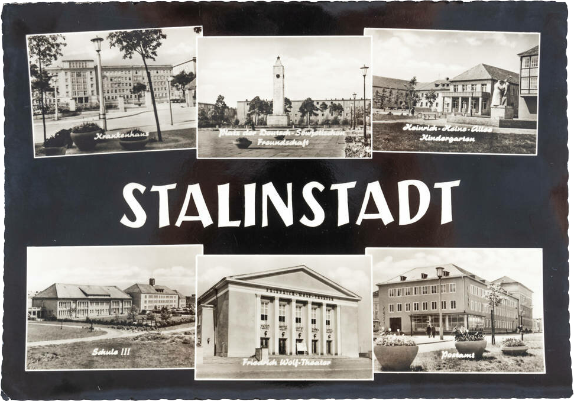
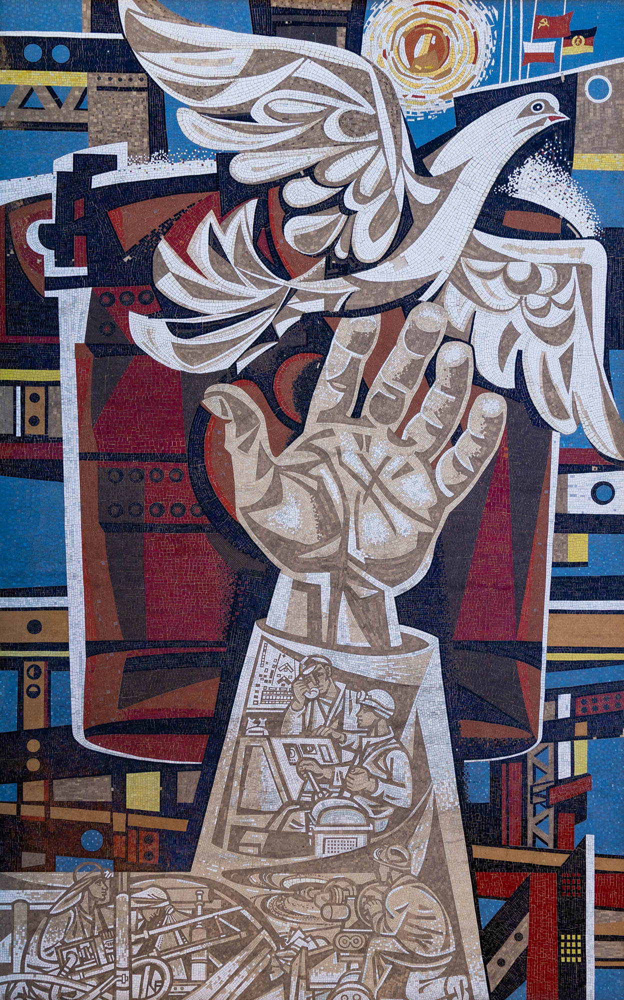
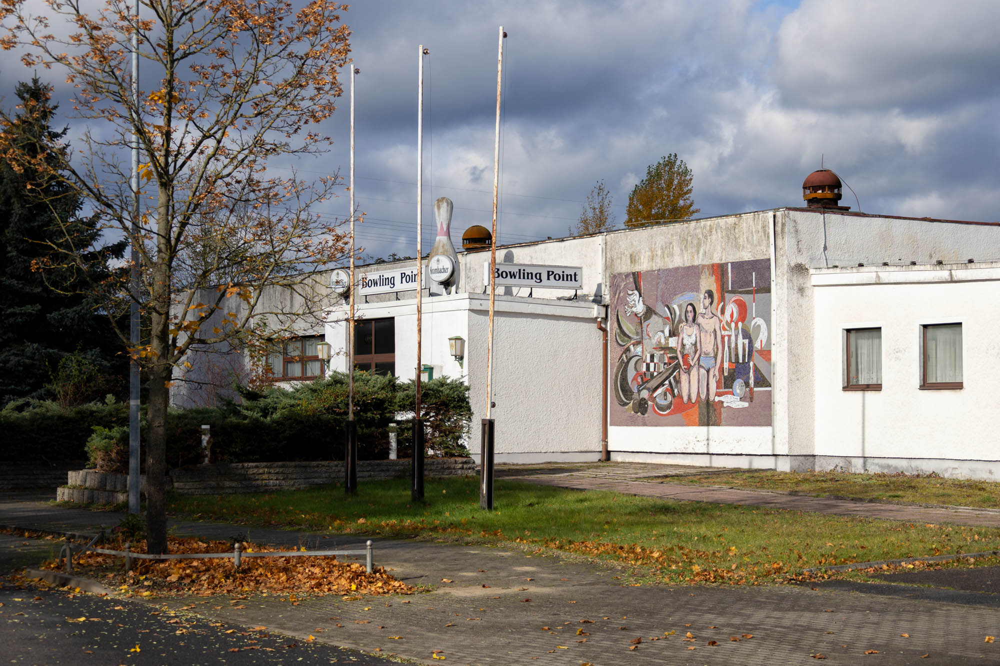
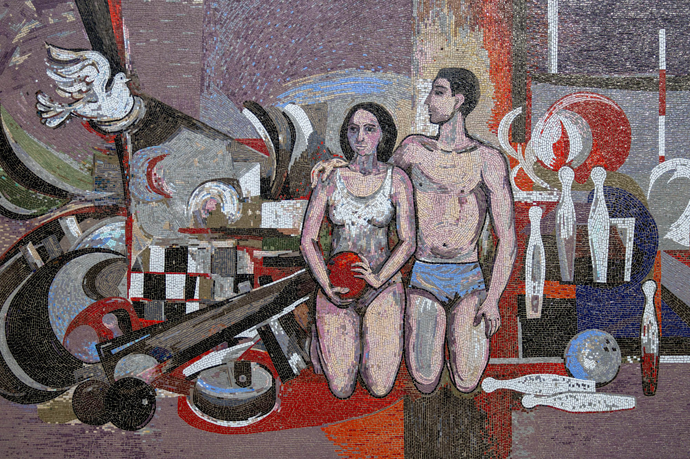
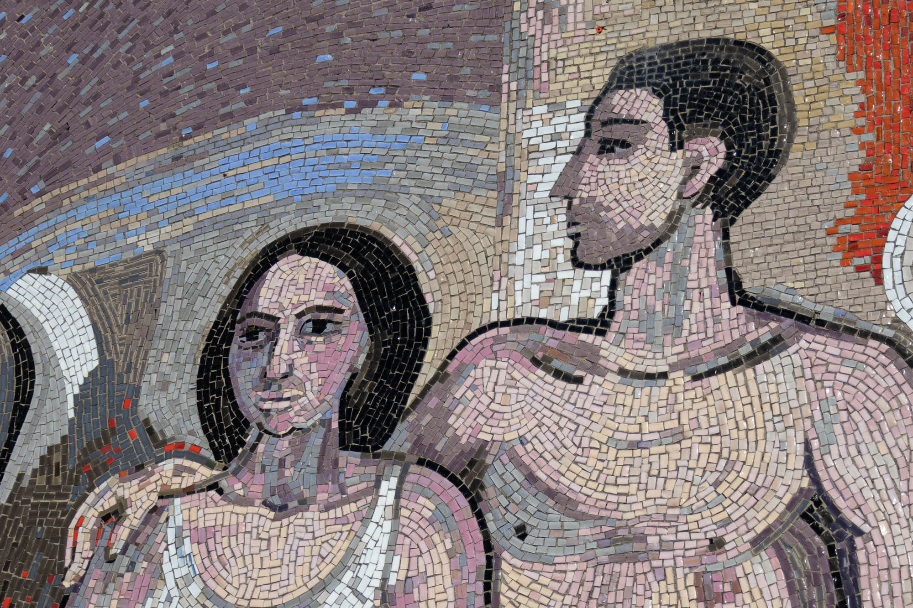
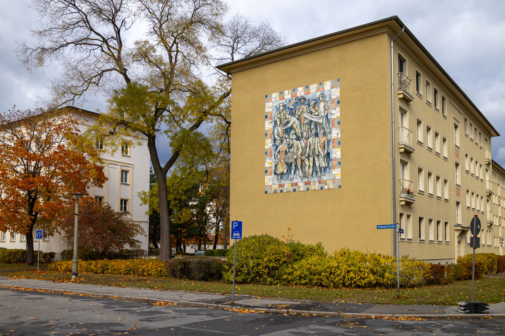
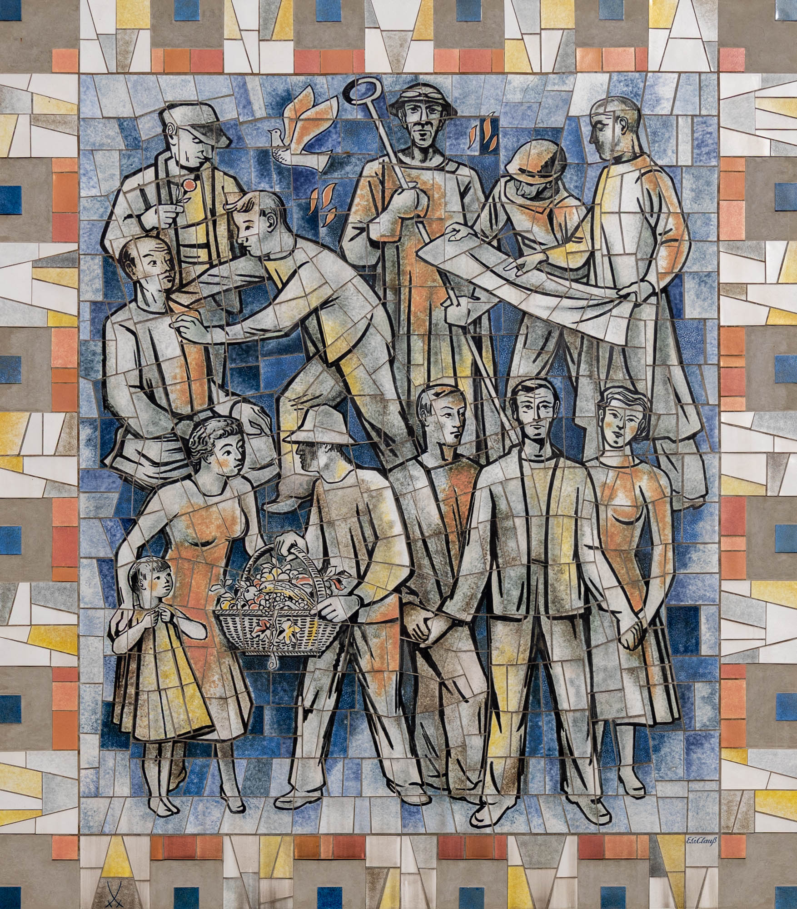
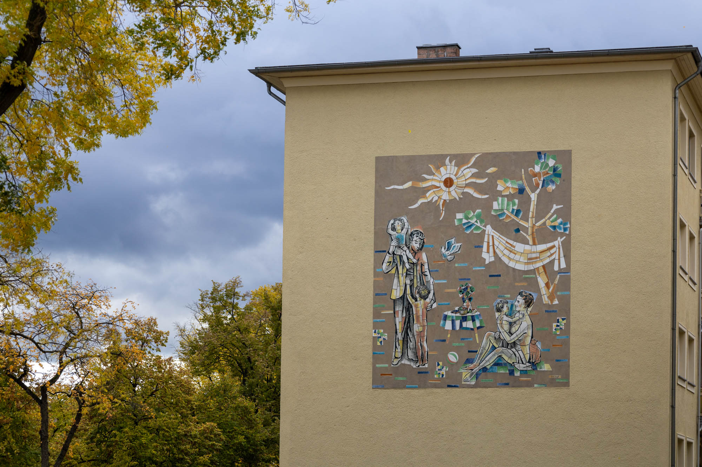
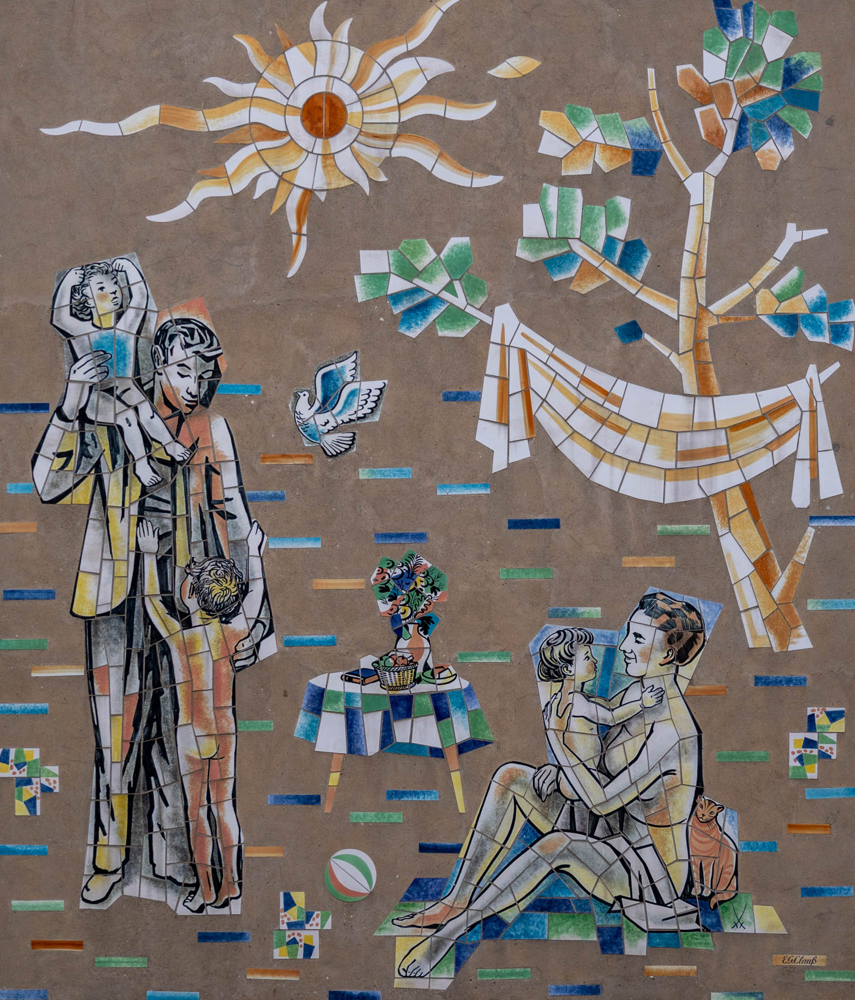
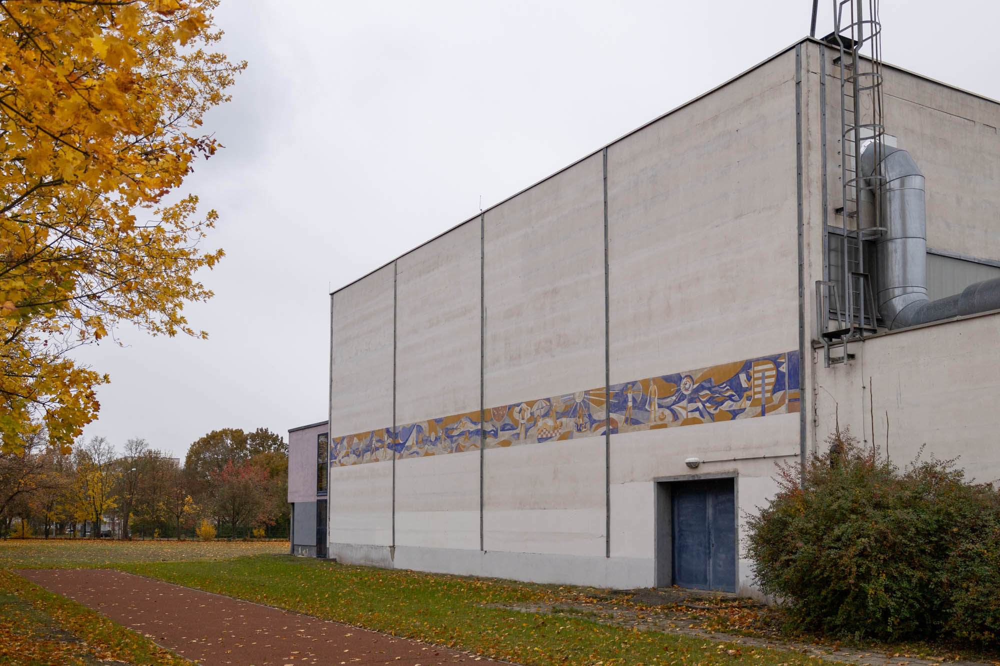

Founded in the 1950s as a planned socialist model city centred around a steel mill complex, Eisenhüttenstadt (meaning “iron works city”) has undergone several name changes since its founding. In 1953, it was renamed Stalinstadt following Stalin’s death, but reverted back to Eisenhüttenstadt in 1961 during the de-Stalinisation period. Today, the city remains home to a significant steel factory and features many amazing Soviet-era mosaics and murals.
Makrokosmos mosaic
Sometimes also referred to as "Weltall, Erde, Mensch" ("Space, Earth, Human"), this double-sided mosaic wall was constructed to celebrate scientific and technological advancements in the Soviet Union. This side's artwork depicts two cosmonauts venturing into the vast expanse of space.
By Otto Schutzmeister, 1969. Location: 52.139743, 14.650781
Mikrokosmos mosaic
The other side depicts a smaller slice of life: three scientists standing in front of the process and promise of atomic energy.
By Otto Schutzmeister, 1969. Location: 52.139743, 14.650781
Gemeinschaftsarbeit der sozialistischen Länder mosaic
With themes of socialism and cross-border solidarity, this large 16 x 10 metre mosaic covers the side of a building on Lindenallee. Its title, roughly translated as "Joint Work of the Socialist Countries", reflects the spirit of cooperation and progress between Poland and East Germany.
By Walter Womacka, 1962. Location: 52.146500, 14.630117

Peace and Leisure mosaic
On the edge of the industrial side of town, you can find an abandoned bowling alley and its bowling-inspired mosaic. The dove from above makes a reappearance alongside two figures in minimal athletic clothes, or maybe swimwear? Pins, balls, and buffers are all depicted quite literally, while the background uses a more abstract approach which likely aims to portray elements of the nearby steel mill.
Artist and date unknown. Location: 52.157822, 14.624603



Völkerfreundschaft mural
On either end of a large apartment building in the Wohnkomplexe I area of Eisenhüttenstadt are two murals. This first one, on the southern wall, depicts a zoomed-out view of society with people from many careers co-existing. Its title, "Friendship Between Peoples", likely also refers to East German-Polish friendship, since the Polish border is only 3.2 km away.
By Eduard Gerhardt Clauß, 1959. Location: 52.147891, 14.633152


Family mural
On the northern side of the building is a zoomed-in view of an element of society: the nuclear family. Parents, children, and a pet cat are all enjoying nature. Take note—in both murals, the dove of peace appears again, it sure has been busy.
By Eduard Gerhardt Clauß, 1959. Location: 52.148949, 14.633720


Sport und Erholung mural
A short distance from the first mosaic featured on this page, a long, four-panel mural spans the side of a sports hall. Each section showcases a different outdoor sport or recreation activity, including a baton relay, water polo, swimming, beach games, archery, and even reading.
By Sepp Womser, 1970. Location: 52.137093, 14.650269
